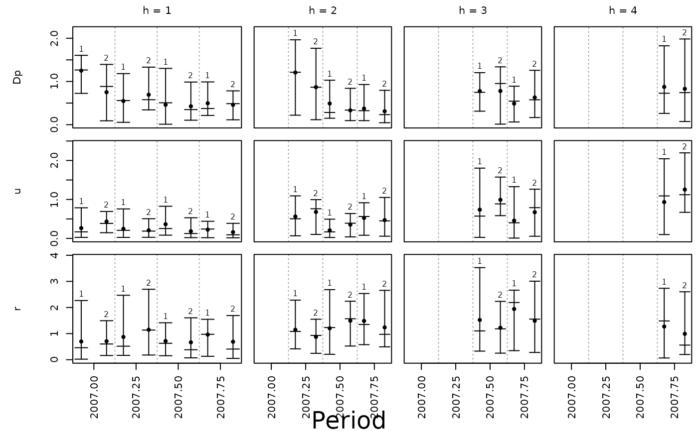

Plotting Forecast Errors per Period
Source:R/plot_forecast_errors_by_period.R
plot_forecast_errors_by_period.RdPlots the forecast errors of a list of Bayesian models as error bars for each period, for which a forecast was made.
Usage
plot_forecast_errors_by_period(
x,
criterion = "AFE",
ci = 0.95,
col = "black",
pch = 20,
cex = 1,
lwd = 1,
main = NULL,
xlab = "Period",
...
)Arguments
- x
an object of class 'bvarmodel', 'bvecmodel', 'expandingwindow' or 'modellist', which contains forecast errors. Usually, a result of a call to
add_forecast_errors.- criterion
the statistic that should be plotted. Available choices are
"FE"for forecast errors,"AFE"(default) for absolute forecast errors and"RSFE"for root squared forecast errors. The mean of"RSFE"is the root mean squared error; its median and band are those of"AFE"up to the interpolation between neighbouring draws, because the square root does not reorder them.- ci
a numeric between 0 and 1 specifying the probability of the credible band. Defaults to 0.95.
- col
a vector of colours, which is recycled over the models in
x.- pch
the plotting symbol used for the mean of a model.
- cex
the size of the plotting symbol used for the mean of a model.
- lwd
a vector of line widths, which is recycled over the models in
x.- main
the title of the plot. If
NULL(default), no title is added.- xlab
the label of the x-axis. If
NULL, no label is added.- ...
further graphical parameters, which are passed on to
plot.
Details
Each row of the plot corresponds to an endogenous variable, each column
to a forecast horizon and the x-axis to the period, for which a forecast was
made. Within a period each model is represented by an error bar, which covers
the credible band of the respective statistic and which is marked by the median
and the mean of the posterior draws of its forecast errors. The position of a
model in x is added above its error bar. For criterion = "FE" a
horizontal reference line is added at zero.
In contrast to plot.selcritlist, which plots statistics that are
calculated across all periods of the evaluation sample, this function plots the
statistics of each period separately. Thus, it is most useful for forecast errors,
which were obtained for multiple periods as, for example, in the case of
expanding window estimation. For objects of class 'expandingwindow' the forecast
errors of all estimation windows of a model are combined, where the period of an
error is obtained from the end of the training sample of the respective window.
See also
Other model comparison:
add_forecast_errors.bvarmodel(),
add_forecast_errors.bvecmodel(),
add_predictive_loglik(),
add_predictive_loglik.bvarmodel(),
add_predictive_loglik.bvecmodel(),
aggregate_forecasts(),
align_model_obs.modellist(),
analysis_of_stored_models,
choose_best_model.selcritlist(),
create_external_forecast(),
folder_steps,
map_draws(),
map_models(),
open_model(),
open_models(),
selection_criteria.bvarmodel(),
selection_criteria.bvecmodel(),
selection_criteria.default(),
selection_criteria.modellist()
Examples
data("us_macrodata")
# AR(1) models as benchmark
model <- create_bvarmodel(data = us_macrodata,
p = 1:2,
deterministic = "none",
error = "gamma",
iterations = 10,
burnin = 2)
# Chosen number of iterations and burn-in draws should be much higher.
# Obtain objects for expanding window estimation
model <- use_expanding_window(model, start = 2007)
# Add priors
model <- add_priors(model,
coef = list(v_i = 1, v_i_det = 1 / 10),
sigma = list(shape = 3, rate = 1))
# Add initial values
model <- add_initial_values(model)
# Obtain posterior draws
model <- add_posterior_coefficients(model)
# Add data used for forecast calculation
model <- add_forecast_input(model, n_ahead = 4)
# Add forecasts
model <- add_posterior_forecasts(model)
# Add forecast errors
model <- add_forecast_errors(model, test_sample = us_macrodata)
# Plot absolute forecast errors of each period
plot_forecast_errors_by_period(model)
